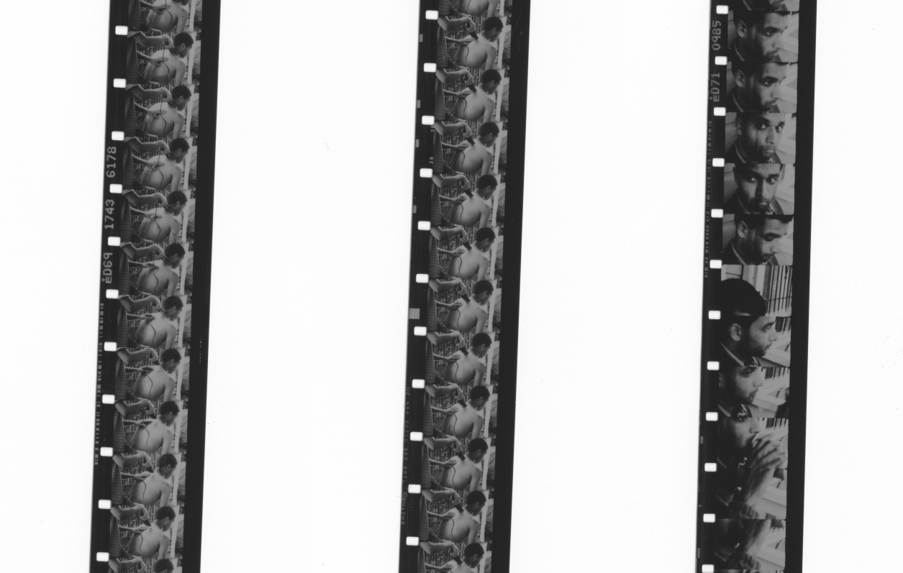
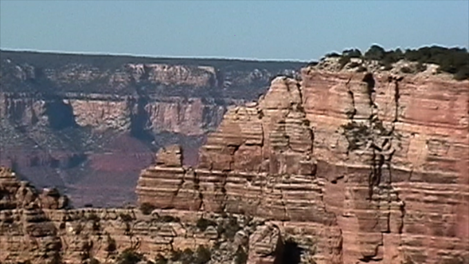

2019-Present | 16mm | B&W | Silent
A short piece on the meniality of labor and its intersections with passing time and imperfection. Processed entirely at Black Hole Collective Film Lab. In progress.

2020 | Digital (MiniDV transfer) | Color | Sound
Screened as part of Commingled Containers: Echoes from the Bay — Program 2: covalences: works from black hole collective film lab, San Francisco Cinematheque, November 19, 2020-January 10, 2021